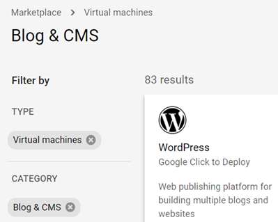
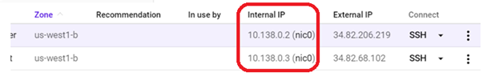
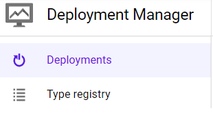
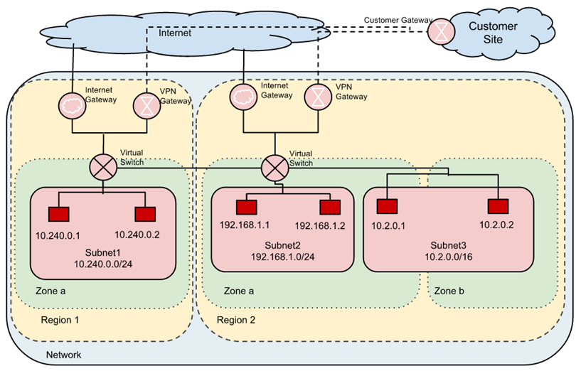
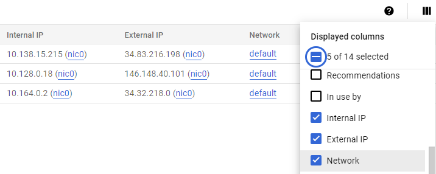
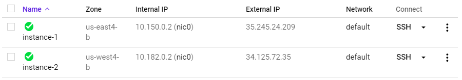
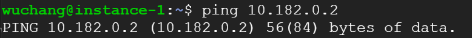
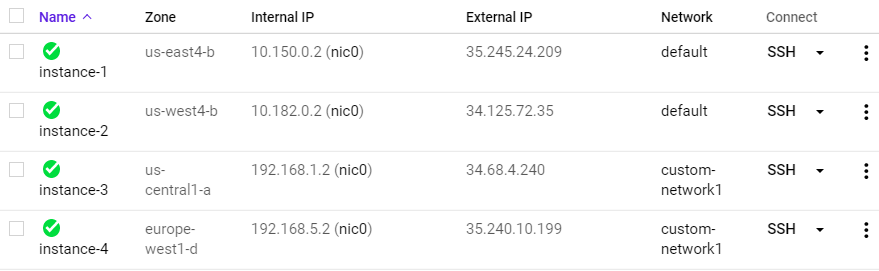

This lab will give you experience with Google Cloud's Marketplace as well with nmap, a standard tool for performing network security audits.
On the Linux VM you've created on Google Cloud, start up your instance, then ssh into it.
gcloud compute instances start course-vm
gcloud compute ssh course-vmWhen connected to the VM, run the following to install nmap on it.
sudo apt update sudo apt install nmap -y
We will be using the VM to scan the Marketplace deployments that we will be launching on Compute Engine
Go to Marketplace on the Google Cloud Platform console

Filter on Virtual Machines, then on Blog & CMS. These solutions, when deployed, will bring up their software on a Compute Engine instance.

Bring up 3 solutions from the Blog & CMS category that have type "Virtual machines" with the following settings (if possible):
- Zone:
us-west1-b(We require all machines to be in the same zone for this lab) - Select "Allow HTTP traffic"
- Deselect "Allow HTTPS traffic"
Visit the landing page for each VM to ensure it has been deployed properly. Go back to the Compute Engine console and note the "Internal IP address" of each instance

Go to the Marketplace on the Google Cloud Platform console. Go to the original VM you installed nmap on. (If you've logged out, click on SSH to log back into it). Then, run nmap on the internal subnet the instances have been placed on:
nmap 10.x.y.z/24
You should see a list of ports that each machine exposes over the network. This provides administrators important data for taking an inventory of their infrastructure in order to ensure only a minimal set of services are exposed.
- Show a screenshot of the output for the scan for your lab notebook.
Clean-up
Shut-down all of the VMs you have created. In the web console, visit "Deployment Manager". Marketplace solutions are all done via this "Infrastructure-as-Code" solution for Google Cloud Platform. We can take solutions down from its console:

Click on each deployment, then delete each one including all of its resources.
For legacy, "lift-and-shift" deployments in the cloud, the goal is to take an existing network configuration that currently exists, and create a virtual equivalent in the cloud.
For example, in the figure below, the "Customer Site" wishes to take 3 of its internal, private subnetworks and shift them into the cloud across 3 different availability zones.

The infrastructure that is deployed to implement this is shown in red. Because these subnetworks were initially private, virtual switches that handle traffic within GCP infrastructure must be used to encrypt traffic between the 3 subnetworks. The figure also shows VPN gateways that must be used to encrypt and route traffic between GCP infrastructure and external destinations such as the customer site. Note that the CIDR prefixes for each subnetwork employ private IP address ranges that are not reachable externally (e.g. 10.240.0.0/24, 192.168.1.0/24, and 10.2.0.0/16).
By default, GCP automatically creates per-zone default subnetworks and will place any VMs instantiated into them. However, based on what the project requires, custom networks and subnetworks can also be specified. Using the gcloud CLI, we will now set up a network consisting of instances in subnetworks spanning a variety of regions/zones using both the default subnetworks GCP provides as well as ones that we create explicitly.
Default networking
Compute Engine is initially configured with a single network consisting of one default subnetwork in each region that VMs are brought up on. Within Cloud Shell, one can list all of the networks that have been instantiated for the project using the command below.
gcloud compute networks list
As the output shows, a single default network is configured. In order to see the subnetworks that are automatically created, run the command below:
gcloud compute networks subnets list
Answer the following questions in your lab notebook:
- How many subnetworks are created initially on the
defaultnetwork? How many regions does this correspond to? (Use a pipe to pass output togrepin order to return specific lines of output and then another to pass output towcto count them:| grep default | wc -l) - Given the CIDR prefix associated with each subnetwork, how many hosts does each subnetwork support?
Create two instances in different zones in separate regions of your choice:
gcloud compute instances create instance-1 --zone <zone_one> gcloud compute instances create instance-2 --zone <zone_two>
List both instances.
gcloud compute instances list
- Which CIDR subnetworks are these instances brought up in? Do they correspond to the appropriate region based on the prior commands?
Visit the Compute Engine console. In the Column Display options, add the "Network" column if it is not yet selected. 
Then, ssh into instance-1 via the UI

From instance-1, perform a ping to the Internal IP address of instance-2. Take a screenshot of the output.

- From the figure in the previous step. What facilitates this connectivity: the virtual switch or the VPN Gateway?
Leave the session on instance-1 active for the next step.
Custom networking
GCP allows one to create custom network configurations as well. To show this, create a second network called custom-network1 and additionally configure it to allow the custom configuration of subnetworks.
gcloud compute networks create custom-network1 --subnet-mode custom
Use the command from the previous step to see our project now has both the default and custom network.
gcloud compute networks list
Then, create two custom subnetworks within custom-network1 in regions us-central1 and europe-west1. For both subnetworks, specify a /24 CIDR prefix:
gcloud compute networks subnets create subnet-us-central-192 \
--network custom-network1 \
--region us-central1 \
--range 192.168.1.0/24
gcloud compute networks subnets create subnet-europe-west-192 \
--network custom-network1 \
--region europe-west1 \
--range 192.168.5.0/24
Use the command from the previous step to list the subnetworks for the custom network.
gcloud compute networks subnets list --network custom-network1Then, list all subnetworks for the two regions.
gcloud compute networks subnets list --regions=us-central1,europe-west1- Take a screenshot of the new subnets created in
custom-network1alongside the default subnetworks in those regions assigned to thedefaultnetwork.
Create instances in each custom subnetwork you've created:
gcloud compute instances create instance-3 \
--zone us-central1-a \
--subnet subnet-us-central-192
gcloud compute instances create instance-4 \
--zone europe-west1-d \
--subnet subnet-europe-west-192 Find the Internal IP addresses for both instances. Then, using your prior session on instance-1, perform a ping from instance-1 to the Internal IP addresses of instance-3 and instance-4.
- Explain why the result of this ping is different from when you performed the ping to
instance-2.
To enable communication amongst all 4 instances, one would need to set up peering between the two networks. We will skip this step and wrap up. Go to Compute Engine in the web console:
- Take screenshots of all 4 instances in the UI including the network they belong to.

Then visit "VPC Network" and visit each network.
- Take a screenshot of the subnetworks created for the
custom-network1network and some of the subnetworks of thedefaultnetwork showing their regions, internal IP ranges and Gateways.
Delete the VMs, subnetworks, and network. Note that if you wish to avoid the prompt to continue, you can pass the --quiet flag to each command.
gcloud compute instances delete instance-1 --zone <zone_one> gcloud compute instances delete instance-2 --zone <zone_two> gcloud compute instances delete instance-3 --zone us-central1-a gcloud compute instances delete instance-4 --zone europe-west1-d gcloud compute networks subnets delete subnet-us-central-192 --region us-central1 gcloud compute networks subnets delete subnet-europe-west-192 --region europe-west1 gcloud compute networks delete custom-network1